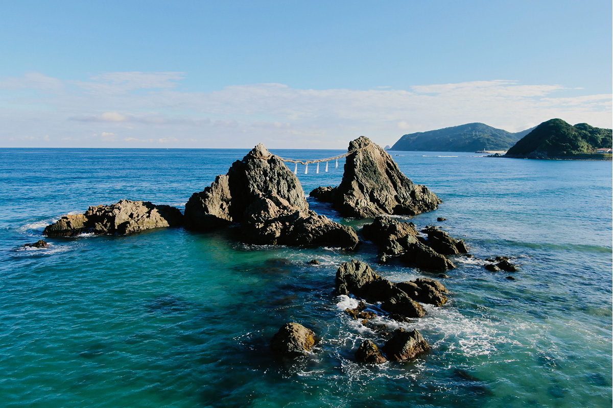
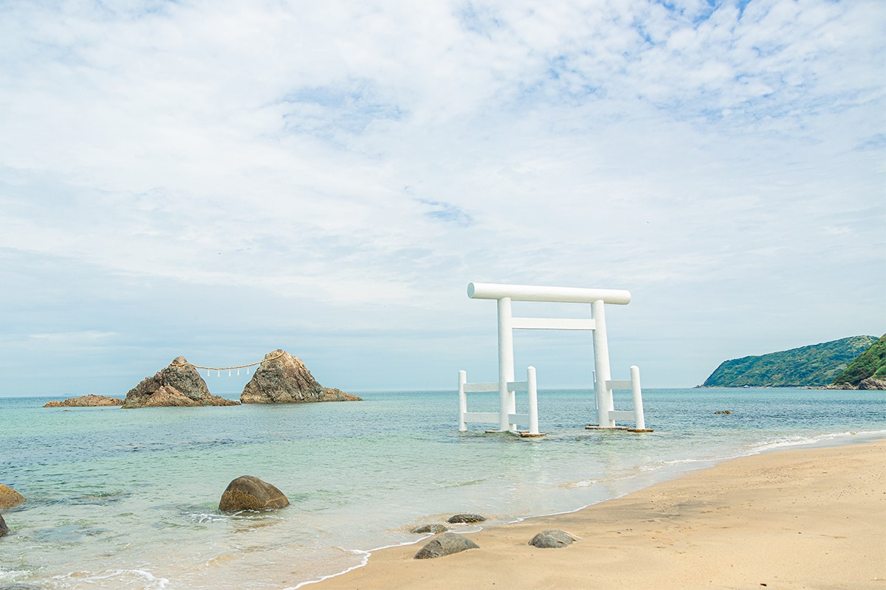
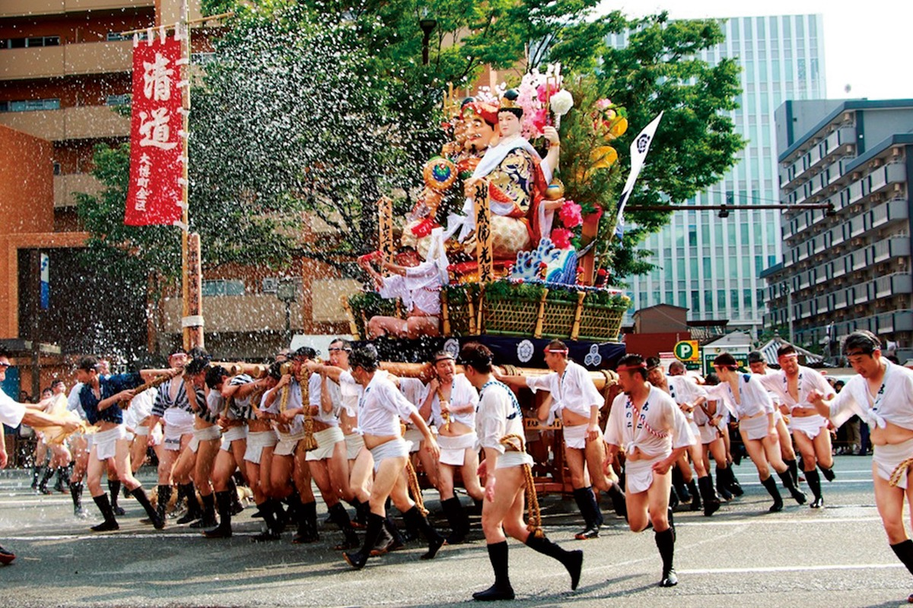
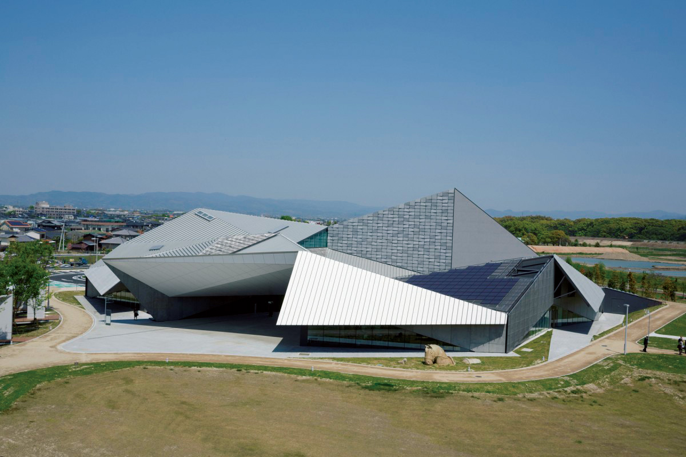
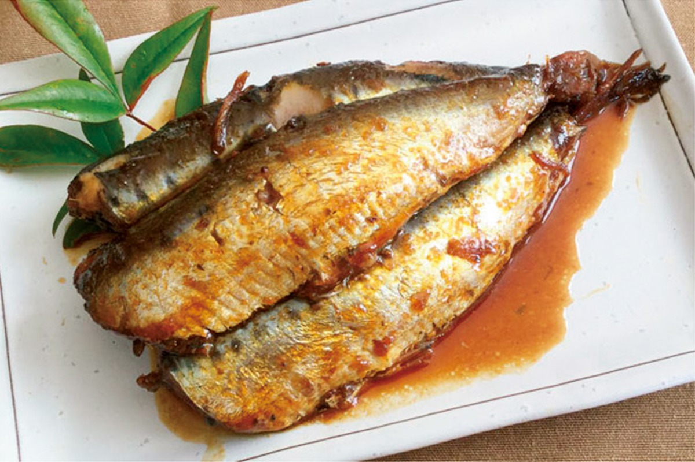
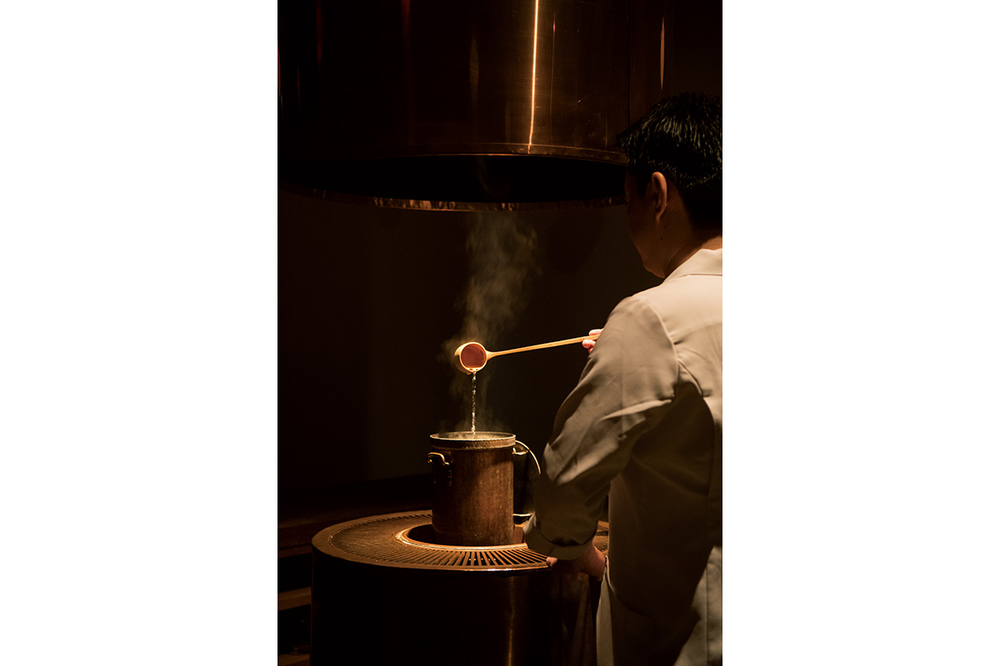
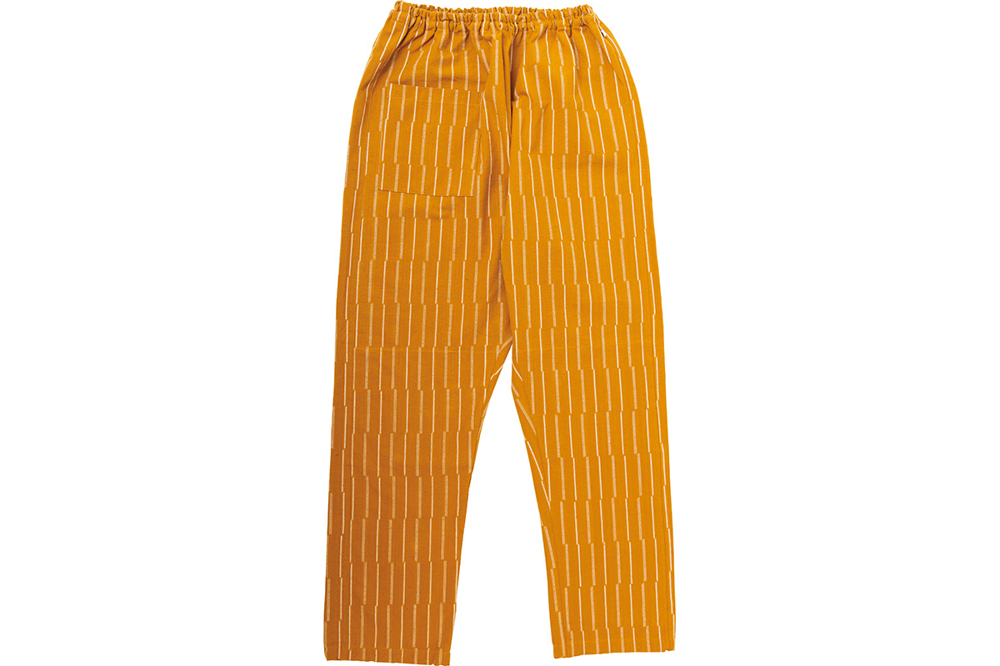
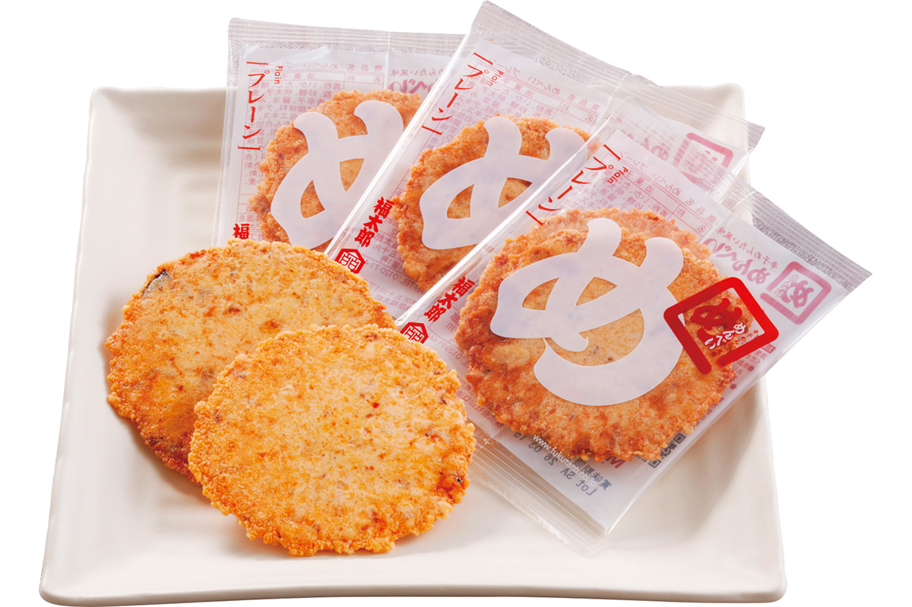
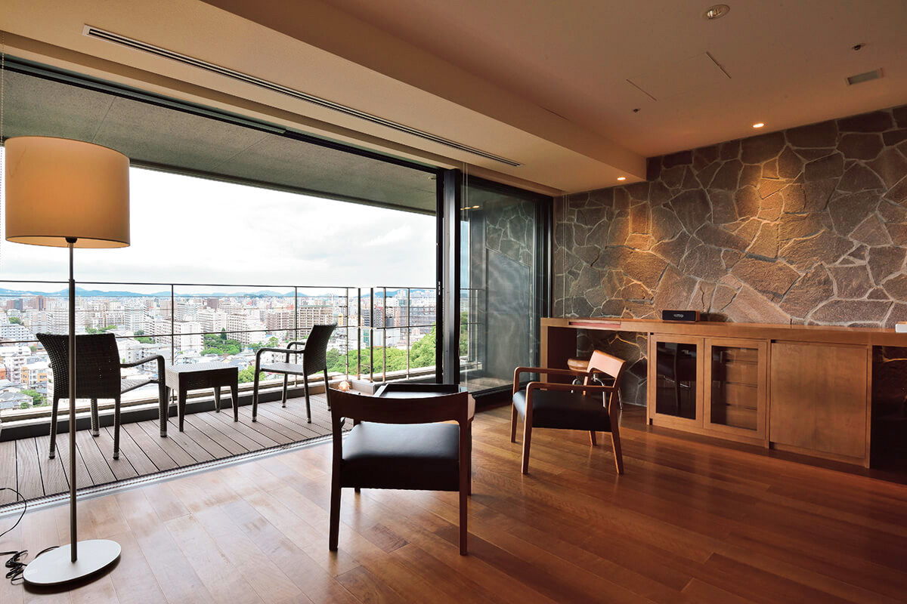

Префектура Фукуока
Фукуока: рамэн, ночные ларьки и камни в море

Скалы поднимаются прямо из воды, а за ними до горизонта тянется открытое море
Рамэн в густом свином бульоне, ночные ларьки у реки, крекеры с острой икрой минтая и два города-миллионника на берегу моря. Рассказываем, за чем ехать в префектуру Фукуока.
О префектуре
Азиатские ворота страны с самым вкусным центром
Фукуока лежит на севере острова Кюсю и с давних времён служила окном в Азию. Ещё в древности здесь стояли управление Дадзайфу и Корокан, гостевой двор, где принимали посольства с материка, а в Средние века порт Хаката вёл торговлю с Китаем, Кореей, островами Рюкю и странами Южных морей. Сегодня в префектуре два города со статусом, который даёт им права префектурного уровня, Фукуока и Китакюсю, и близость к соседям снова работает: связи с Кореей, Китаем и Юго-Восточной Азией здесь очень плотные.
При этом Фукуока помнит и другую свою роль. В эпоху Мэйдзи, то есть во второй половине XIX века, в Тикухо и Омуте начали добывать уголь, вокруг металлургического комбината в Яхате выросла сталелитейная промышленность, а следом сложился промышленный пояс Северного Кюсю с машиностроением, электротехникой, химией и керамикой.
Но главное, за чем сюда едут, это еда. Тонкоцу-рамэн на свином бульоне, острая икра минтая караси-мэнтай, моцунабэ из субпродуктов, курица в кипящем бульоне хидзамоцунабэ... перечислять можно долго. А ещё в центре Хакаты и Накасу работают ятаи: так здесь называют небольшие ларьки с кухней прямо на улице, и прогулка от одного к другому стала обязательным пунктом программы.
Что посмотреть
Два камня и верёвка весом в тонну
Сакураи Футамигаура
Это место вошло в список ста лучших морских пейзажей Японии. В 150 метрах от берега из воды поднимаются два камня, которые называют камнями супругов, и между ними натянута самая большая верёвка из рисовой соломы: она весит около тонны.

- Справки
- туристическая ассоциация города Ито
- Телефон
- +81 92-322-2098
Что ещё посмотреть
- Тэммангу в Дадзайфу, святилище, куда приходят перед экзаменами
- Святилище Миядзидакэ с гигантскими воротами и колоколом
- Усадьба рода Татибана в Янагаве с садом
Праздники
Праздник, на котором горы бегут по улицам
Гион-Ямакаса в Хакате
Это обряд, во время которого платформы ямакаса подносят главному святилищу квартала Хаката, храму Кусида. Ямакаса это высокая платформа в виде горы. Те, что проносят бегом по улицам, называют «горой движения», а богато украшенные и неподвижные, выставленные на обозрение, «горой покоя».

- Когда
- ежегодно с 1 по 15 июля (в 2020 году отменён)
- Место
- район Хаката, город Фукуока
Другие праздники
- Праздник порта Донтаку в Хакате с шествием горожан в костюмах
- Гион в Тобате с огромными платформами-горами
- Барабаны Гион в Кокуре
Музеи и архитектура
Станция, которая стоит в парке
Культурный центр префектуры в парке Тикуго
Комплекс построили напротив станции Тикуго-Фуная, которую называют станцией в парке, и он служит воротами к новой сверхскоростного поезда синкансэн на Кюсю. Здание с наклонной крышей поставили с участием архитектора Кэнго Кумы.

- Адрес
- 1131 Tsushima, Chikugo, Fukuoka
- Телефон
- +81 942-52-6435
- Сайт
- kyushu-geibun.jp
Что ещё посмотреть
- Национальный музей Кюсю в Дадзайфу с коллекцией по истории острова
- Культурный центр Акурос Фукуока со ступенчатым садом на стене
- Городской музей искусств Китакюсю
Местная кухня
Рыба, которую готовят с рисовыми отрубями
Нукадаки
Сначала рыбу варят с соевым соусом, мирином и сахаром, а затем добавляют нукадоко, густую смесь из рисовых отрубей, в которой обычно солят овощи. Рыба теряет запах, а отруби отдают ей вкус и питательность: это старая домашняя заготовка, которую здесь готовят и сегодня.

Что ещё попробовать
- Удон по-хакатски, мягкую лапшу в светлом бульоне
- Хорумон-набэ из Тагавы, горячее из субпродуктов
- Гамэни, овощное рагу, которое здесь готовят на праздники
Где поесть
Чайный дом на месте древнего гостевого двора
Ёрозу
Этот чайный салон открыли на том самом месте, где когда-то стоял Корокан, гостевой двор для иностранных посольств. Хозяин сам выбирает чай, здесь подают сезонные сладости и разные виды сакэ, а в зале-галерее можно взять целый сет с чаем и рисовой кашей.

- Адрес
- 2-3-32 Akasaka, Chuo, Fukuoka, Fukuoka
- Телефон
- +81 92-724-7880
- Часы
- с 12:00 до 24:00
- Выходной
- воскресенье
- Сайт
- yorozu-tea.jp
Ремёсла
Штаны из местной узорчатой ткани
MONPE от мастерской «Унаги-но нэдоко»
Мастерская шьёт широкие домашние штаны монпэ из курумэ-касури, ткани с узором, которую веками ткали в Курумэ и Тикуго. Крой здесь сделали более узким, а расцветок и рисунков много: от спокойных до ярких.

- Телефон
- +81 943-22-3699
Что привезти
Крекер с икрой минтая
Мэмбэй от «Ямагути Абурая Фукутаро»
Этот хрустящий рисовый крекер начиняют острой икрой минтая и другой морской снедью: вкус получается насыщенным, а сам он лёгкий, поэтому его удобно везти домой.

- Цена
- 1000 иен за 16 пакетов по два крекера
- Телефон
- +81 92-475-7777
- Сайт
- fukutaro.co.jp
Где остановиться
Отель на холме над городом
Агора Фукуока Хиллтоп
Отель стоит на возвышении, откуда открывается вид на весь город. Внутри всё строго и современно, а из удобств есть спа и купальня с природной горячей водой: получается городской курорт прямо в центре.

- Адрес
- 1-1-33 Terukuni, Chuo, Fukuoka, Fukuoka
- Телефон
- +81 92-771-2131
- Номеров
- 46
- Цена
- от 18 000 иен за сутки с завтраком и ужином, налог и сервисный сбор включены, туристический сбор отдельно
Местный диалект
Как здесь хвалят еду и просят принять в компанию
- Бари умакааНу очень вкусно
- СэкарасикаШумно, громко
- СуттакумонЛентяй, лежебока
- КатэтэПримите меня в компанию
Рекорды
Первые в стране по бамбуку, клубнике и комодам
- №1 по сбору бамбуковых побегов
- №1 по цене продажи клубники: здесь её называют «амаоу»
- №1 по отгрузке комодов
Вопросы и ответы
Два вопроса о Фукуоке
В каком святилище собраны самая большая верёвка, самый большой барабан и самый большой колокол Японии?
В святилище Миядзидакэ. Верёвка из рисовой соломы, символ святилища, достигает в диаметре 2,6 метра, в длину 11 метров и весит 3 тонны. Большой барабан здесь диаметром 2,2 метра, а бронзовый колокол весит 450 килограммов. На территории есть и курган с одной из самых больших в стране каменных погребальных камер.
Какой курорт с горячими источниками упоминали в своих стихах и путевых заметках?
Фуцукаити-онсэн. Он известен с давних времён и упоминается в поэтической антологии «Манъёсю», то есть в собрании японской поэзии VIII века. Здесь бывали поэт Отомо-но Табито и писатель Нацумэ Сосэки, а современное имя курорт получил в 1950 году.
Справочник
Фукуока в цифрах
Общие данные
| Административный центр | Фукуока |
| Муниципалитеты | 29 городов, 29 посёлков и 2 села |
| Площадь | 4987 км² |
| Население | 5,11 млн человек |
| Плотность населения | 1024,2 чел./км² |
| Туристов в год | 89,44 млн |
| Символ-дерево | азалия |
| Символ-цветок | цветы сливы |
| Символ-птица | соловей |
Климат
| Средняя годовая температура | 17,7 °C |
| Средний максимум | 34,5 °C |
| Средний минимум | 2,7 °C |
| Осадки | 1617 мм в год |
| Ясных дней | 34 |
| Дней с осадками | 111 |
| Дней со снегом | 28 |
Для путешественника
| Горячих источников | 50 |
| Отелей и рёканов | 957 |
| Художественных музеев | 8 |
| Музеев | 20 |
| Придорожных станций митиноэки | 17 |
| Объектов культурного наследия | 268, из них 14 национальных сокровищ |
| Национальные сокровища | золотая печать из музея города Фукуока, колокол храма Кандзэондзи и другие |
| Исторических памятников | 88 |
| Живописных мест | 8 |
| Памятников природы | 21 |
| Всемирное наследие | объекты промышленной революции эпохи Мэйдзи, а также остров Окиносима и связанные с ним памятники |
| Национальные и квазинациональные парки | Внутреннее море, Китакюсю, Гэнкай, Яба Хита Хико-сан, всего 4 |
Природные памятники
Рыбка хинамороко, роща камфорных деревьев на горе Татибана, заросли самшита на горе Косё, лес на острове Окиносима, роща Какурамори, скала Кэя-но даймон и другие.
К воде здесь относятся бережно: по эффективности использования воды для бытовых нужд префектура вторая в стране, а по одному из показателей чистоты рек, биологическому потреблению кислорода, она третья снизу, то есть реки у неё одни из самых чистых. С 2019 года префектура выполняет десятилетний план по обновлению водопроводной сети, чтобы вода приходила в дома бесперебойно даже при стихийных бедствиях.